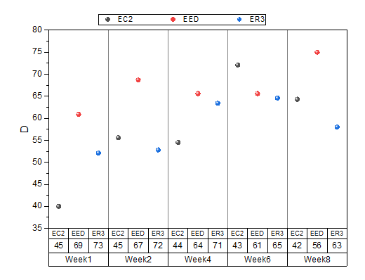
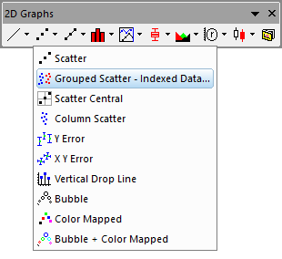
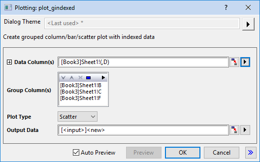

Gruppierte Punktdiagramme, Index
GroupedScatter-IndexedData

Datenanforderungen
Erfordert mindestens eine Y-Spalte als Eingabedaten. Außerdem enthält/enthalten eine oder mehr Spalte(n) Gruppierungsinformationen.
Diagramm erstellen
Öffnen Sie den Dialog plot_gindexed mit einer der beiden Methoden:
- Wählen Sie im Menü Zeichnen> Kategorial: Gruppiertes Punktdiagramm, Indexdaten.
- Klicken Sie auf die Schaltfläche
 auf der Symbolleiste 2D-Grafiken.
auf der Symbolleiste 2D-Grafiken.
- 
Wählen Sie in dem aufgerufenen Dialog den Eingabebereich aus. Fügen Sie mindestens eine Gruppenspalte hinzu und bestimmen Sie, wo die Daten ausgegeben werden sollen. Klicken Sie auf Vorschau oder OK, um Ihre Zeichnung zu erstellen und den Dialog zu schließen.
Dialog plot_gindexed
-
- 
| Datenspalte(n) |
Dieser Zweig wird zum Festlegen der Eingabedaten verwendet. |
| Gruppenspalte(n) |
Enthalten sind hierbei ein Anzeigefeld und eine Symbolleiste mit fünf Schaltflächen  : :
-
Anzeigefeld
- Die ausgewählten Gruppenbereiche werden mit Hilfe der Schaltfläche Hinzufügen in diesem Feld angezeigt. Die ersten ausgewählten Gruppenbereiche werden als erste Kategorisierung festgelegt und bilden die untere Zeile der Gruppentabelle des Säulendiagramms; die zweiten ausgewählten Gruppen fahren mit der Gruppierung basierend auf der ersten Kategorisierung fort und bilden den zweiten Layer der Gruppentabelle und so weiter.
- Schaltfläche Hinzufügen

- Klicken Sie auf diese Schaltfläche und wählen Sie dann eine Spalte vom Menü aus; oder klicken Sie auf Spalten auswählen, um den Spaltenbrowser und fügen Sie (eine) Spalte/n in das Anzeigefeld als Gruppierungsbereich(e). Sie können bis zu 5 Gruppierungsbereiche hinzufügen.
- Schaltfläche Entfernen

- Die ausgewählten Datenbereiche werden aus dem Anzeigefeld entfernt. Diese Schaltfläche ist verfügbar, wenn Sie einen oder mehrere Datenbereiche im Feld Gruppenspalte(n) auswählen.
- Schaltfläche Nach oben verschieben

- Die ausgewählten Datenbereiche werden im Anzeigefeld nach oben verschoben. Die Gruppierungsabfolge wird geändert.
- Schaltfläche Nach unten verschieben

- Die ausgewählten Datenbereiche werden im Anzeigefeld nach unten verschoben. Die Gruppierungsabfolge wird geändert.
- Schaltfläche Alle auswählen

- Alle Datenbereiche im Feld Gruppenspalte(n) werden ausgewählt.
|
| Diagrammtyp |
Legen Sie Punktdiagramm fest. Beachten Sie, dass es eine Säulen-Balken-Variante von diesem Diagrammtyp gibt. |
| Ausgabedaten |
Legen Sie fest, wo die berechneten Daten ausgegeben werden. |
Zusätzlich können Sie sich das finale Diagramm in diesem Dialog anzeigen lassen.
Hinweis:
-
- Die Option Neu berechnen ist in diesem Dialog standardmäßig auf Auto gesetzt.
- Der Gruppierungsbereich wird anhand der alphabetischen Standardreihenfolge sortiert. Sollte dies nicht akzeptabel sein, markieren Sie die Arbeitsblattspalte, klicken Sie mit der rechten Maustaste und setzen Sie sie als kategorisch. Sie können dann die Listenreihenfolge auf der Registerkarte Kategorien modifizieren.
- Standardmäßig teilen wir die Spalten durch die erste Gruppenspalte in Teildatensätze, wenn wir ein Gruppensäulendiagramm in diesem Dialog erstellen. Sie können die Standardeigenschaften des Teildatensatzes auf der Registerkarte Abstand (Details Zeichnung) ändern.
|
Vorlage
gSCATTER.OTP (installiert im Origin-Programmordner)
Hinweise
- Innerhalb jeder Gruppierung werden Datenpunkte gegen den Zeilenindex gezeichnet. Dies erzeugt bemerkenswert variable Hilfsstrichsabstände auf der horizontalen Achse, wenn es signifikante Unterschiede bei den Stichprobenumfängen unter den Kategorien gibt. In diesen Fällen empfinden Anwender das Gruppierte Boxdiagramm, Indexdaten womöglich als die bessere Lösung. Wenn das gruppierte Boxdiagramm erstellt ist, öffnen Sie Details Zeichnung, gehen Sie zur Registerkarte Box und setzen Sie Typ auf Daten.
- Wenn es mehr als einen Gruppierungsbereich (im Feld Gruppenspalte(n)) gibt, werden die Hilfsstrichsbeschriftungen der X-Achse standardmäßig als Tabellen angezeigt. Sie können dieses Verhalten und die Formatierung der Tabelle der Hilfsstrichsbeschriftung im Allgemeinen über die Registerkarte Tabelle auf der Registerkarte Beschriftung der Hilfsstriche des Dialogs Achsen steuern.
- Sie können die Abstände zwischen den Säulen bzw. Säulengruppen mit Hilfe der Bedienelemente auf der Registerkarte Abstände des Dialogs Details Zeichnung modifizieren.